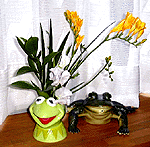
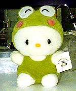
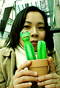

|
 カエルに活けるカエル華道！【熊本発=カエル華道家元のんたん同志記者】我が家の生け花作品をご紹介。といっても、ご覧のとおりこれは花瓶じゃなくてマグカップ。カーミットの頭に花が咲いているところが何とも春らしいでしょ!？ 【全国かえる奉賛会】カエルの頭部に春。。いいなー。カエルに目覚めた生け花カエラーは、いまこそ全流派の垣根を越えて、師匠に『花材をカエル花瓶にしてください！』と宣言し、花展には、カエル生け花を出展しよう！ 中華民国台湾省でキティーケロッピ発見！サンリオ２大スター夢の合体が実現 【横浜発=横浜のつがえる同志記者】1/13日号でカエルキティーちゃんが紹介されていましたが、これは同じ号の記事の執筆者横浜のおかえる氏が台湾土産に買ってきてくれたカエルキティーちゃん（もどき）です。カエル部分はけろっぴ（もどき）になっています。サンリオが許さないと思うので日本では発売されないと思いますが、さすがは台湾パワーです。是非本家サンリオでもつくっていただきたいです。
ケロッピキティーで本家も対抗を！【全国かえる奉賛会】著名２大キャラクターを合体させれば、人気も２倍でぼろ儲け、というものである。さー本家、サンリオも、海賊版？に負けずに柔軟かつ大胆な発想で、キティーの皮をかぶったケロッピを発売しようではないかあああ。 カエルサボテンが完成！３月発売開始へ【福岡発=謎のカエルサボテン美少女様】みなさん、お待たせしました？待っている人がいするのかな？？カエルサボテン（木彫一刀彫り）が３体完成ました。写真撮りして、３月からけろテン市場で発売します。カエルサボテンは、３つとも手彫りなので、少しづつ表情が違います。名前も付けようかな(笑)
カエルサボテン。サボテンミニ。サボテン用土。サボテン植木鉢。４点セットで２０００円を予定しています。
カエル点眼でおメメはパッチリ！【名古屋発=かえる将軍同志記者】 なんとも微笑ましい看板をみつけたので報告します。地下鉄の駅の看板ですが象の「Aゾウ先生」が患者の「かんガエル」君に点眼しています。
【全国かえる奉賛会】福岡にもある眼科が、カエルをキャラクターにして看板を出している。おメメが突出していて、目立つカエルは、眼科医にとって、もってこいのキャラクターなのであろうか！それにしても、ゾウ医者は、自分の鼻水を注入してたりしないよねー。ちゃんと点眼薬にしてくれよおおお。
入間市がカエル専用トンネル建設！【埼玉発=jun-z同志記者】埼玉でカエル用トンネルができたそうです。某大手新聞に載っていたのですが、入間市が、池の近くの市道の下に、カエル専用のトンネルを建設して、繁殖の際に、道路に出て車に引かれないように配慮したという。総工費は１１７万円だったそうです。
市民挙げて救出作戦！３１０匹の蛙命救わる！【大分発=jun-z同志記者】ＴＢＳ系のサンデーモーニングで日本発の「カエルトンネル」が埼玉県の入間市にできたということです。報道によるとカエルが産卵のために道路を横断するとき車で轢かれていたらしく、毎年「大森の池ファンクラブ」の方たちが道路に出たカエルを救出していたそうですが（名づけてカエル救出作戦）、市民たちが入間市に陳情してこのたび完成したそうです。ちなみに去年は３１０匹の貴い命が救われたそうです。番組では今月末の産卵期にその効果があるのかを追いつづけるそうです。カエル行政は入間市に学べ！【全国かえる奉賛会】同時期の報道なので、入間市役所が記者会見をして発表したのであろう。入間市役所カエル担当報道官の説明のもと、報道各社が熱烈に取材した様子が伝わって来るではないかああああ。さすがにカエル画伯・河鍋さんを輩出した埼玉県である。全国のカエラーは、自治体にカエル専用トンネルに、カエル専用道路、カエル繁殖池の建設を促進するため、署名活動と議会陳情活動を推進しよう。また全国の自治体も入間市を手本にして、カエル増殖計画対策本部（本部長は各自治体の長）を設置し、カエル担当報道官（局長、部長級）を置いて、カエル主義拡大のために先手を打とう！
カエル救出作戦集団に感状発行を決定！【げこげこ大王７世直筆】降雨の中をものともせず、敢然とカエル救出に尽力し、カエル専用トンネルの建設も実現した、「大森の池ファンクラブ」の熱烈なカエル主義推進の崇高な行為に対し、いたく感動した大王は、感状を出すことにした。製造まで時間がかかるが、なからず出すので、誰か、「大森の池ファンクラブ」の知人を持つカエラーは、連絡をとって、大王からの謝辞を伝えてくれーっ！カエル本が買える！かえる書店を３月開店へ！【全国かえる奉賛会】レアなカエル本は、非カエラーにとっては、無関心かもしれないが、われわれカエラーには、大切な書籍だ。すぐれたカエル本を絶版の淵から救出し、世の中の出版物がすべてカエル関係書籍になるように、かえる書店を準備して、カエラーがカエル本をスグ買えるようにするぞおおおおっ！３月くらいにオープンするからねー。カエル本の画像付き情報を募集！ 【福岡発=ぴのこ同志記者】カエルな本は、世の中全体から見れば、需要が少ないので、出版されても知らないウチに絶版になっていたりします。そんなのは、とっても残念です！いっそ、インターネット上に、カエル書籍を集中的に扱うバーチャル書店を作ってしまうことにしました。
【福岡発=ぴのこ同志記者】カエルな本は、世の中全体から見れば、需要が少ないので、出版されても知らないウチに絶版になっていたりします。そんなのは、とっても残念です！いっそ、インターネット上に、カエル書籍を集中的に扱うバーチャル書店を作ってしまうことにしました。みんなが知っているカエルをテーマにした本を教えて下さい。ある書店と契約して希望のカエル本を、みなさんのもとに配達してくれるように準備中です。
訪問９９９９９人目に記念品贈呈！【全国かえる奉賛会】９９９９９人目の訪問者に、記念品を贈呈するぞー。該当者は、大王様へのメールwakuro-3@hf.rim.or.jpで自己申告してくれー。福岡かえる展２のＭＬを開設！【福岡かえる展２事務局】福岡かえる展２の実行委員会用のメーリングリストを開設しました。公式ホームページの他に、実行委員会メンバーが情報交換する場所です。もちろん最新の情報は、昨年同様に、できるかぎりすべて、公式ホームページで公開します。メーリングリストで、その準備段階から体験したいというカエラーは、参加していただいてかまいません！参加申し込みは、ここからも自分でできるからねーっ！ 投稿採用者に武功カエル徽章を授与！ |
かえる古新聞過去に取り上げた記事を見出し付きで一覧したい人は、ここをクリック◆創刊号を見る◆先週号を見る◆話題の号を見る◆かえる新聞の昔を読む
|
私も入っています。。全国かえる奉賛会
大王様に会うには、このバナーをクリック。ずっと奥に写真館があるぞ。全国かえる奉賛会に入会するには、自分のホームページのどこかに、下の部分を追加するとバナーがリンク付きで表示されるぞ。どんどん入会しましょー |


|